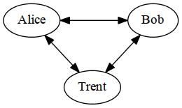
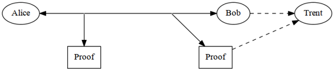
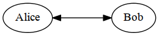

The whole point of cryptography is to solve problems. (Actually, that’s the whole point of computers — something many people tend to forget.) Cryptography solves problems that involve secrecy, authentication, integrity, and dishonest people. You can learn all about cryptographic algorithms and techniques, but these are academic unless they can solve a problem. This is why we are going to look at protocols first.
A protocol is a series of steps, involving two or more parties, designed to accomplish a task. This is an important definition. A “series of steps” means that the protocol has a sequence, from start to finish. Every step must be executed in turn, and no step can be taken before the previous step is finished. “Involving two or more parties” means that at least two people are required to complete the protocol; one person alone does not make a protocol. A person alone can perform a series of steps to accomplish a task (like baking a cake), but this is not a protocol. (Someone else must eat the cake to make it a protocol.) Finally, “designed to accomplish a task” means that the protocol must achieve something. Something that looks like a protocol but does not accomplish a task is not a protocol — it’s a waste of time.
Protocols have other characteristics as well:
The protocols in this book are organized as a series of steps. Execution of the protocol proceeds linearly through the steps, unless there are instructions to branch to another step. Each step involves at least one of two things: computations by one or more of the parties, or messages sent among the parties.
A cryptographic protocol is a protocol that uses cryptography. The parties can be friends and trust each other implicitly or they can be adversaries and not trust one another to give the correct time of day. A cryptographic protocol involves some cryptographic algorithm, but generally the goal of the protocol is something beyond simple secrecy. The parties participating in the protocol might want to share parts of their secrets to compute a value, jointly generate a random sequence, convince one another of their identity, or simultaneously sign a contract. The whole point of using cryptography in a protocol is to prevent or detect eavesdropping and cheating. If you have never seen these protocols before, they will radically change your ideas of what mutually distrustful parties can accomplish over a computer network. In general, this can be stated as:
This is a lot harder than it looks. In the next few chapters I discuss a lot of protocols. In some of them it is possible for one of the participants to cheat the other. In others, it is possible for an eavesdropper to subvert the protocol or learn secret information. Some protocols fail because the designers weren’t thorough enough in their requirements definitions. Others fail because their designers weren’t thorough enough in their analysis. Like algorithms, it is much easier to prove insecurity than it is to prove security.
In daily life, there are informal protocols for almost everything: ordering goods over the telephone, playing poker, voting in an election. No one thinks much about these protocols; they have evolved over time, everyone knows how to use them, and they work reasonably well.
These days, more and more human interaction takes place over computer networks instead of face-to-face. Computers need formal protocols to do the same things that people do without thinking. If you moved from one state to another and found a voting booth that looked completely different from the ones you were used to, you could easily adapt. Computers are not nearly so flexible.
Many face-to-face protocols rely on people’s presence to ensure fairness and security. Would you send a stranger a pile of cash to buy groceries for you? Would you play poker with someone if you couldn’t see him shuffle and deal? Would you mail the government your secret ballot without some assurance of anonymity?
It is naïve to assume that people on computer networks are honest. It is naïve to assume that the managers of computer networks are honest. It is even naïve to assume that the designers of computer networks are honest. Most are, but the dishonest few can do a lot of damage. By formalizing protocols, we can examine ways in which dishonest parties can subvert them. Then we can develop protocols that are immune to that subversion.
In addition to formalizing behavior, protocols abstract the process of accomplishing a task from the mechanism by which the task is accomplished. A communications protocol is the same whether implemented on PCs or VAXs. We can examine the protocol without getting bogged down in the implementation details. When we are convinced we have a good protocol, we can implement it in everything from computers to telephones to intelligent muffin toasters.
To help demonstrate protocols, I have enlisted the aid of several people (see Table 2.1). Alice and Bob are the first two. They will perform all general two-person protocols. As a rule, Alice will initiate all protocols and Bob will respond. If the protocol requires a third or fourth person, Carol and Dave will perform those roles. Other actors will play specialized supporting roles; they will be introduced later.
| Alice | First participant in all the protocols |
| Bob | Second participant in all the protocols |
| Carol | Participant in the three- and four-party protocols |
| Dave | Participant in the four-party protocols |
| Eve | Eavesdropper |
| Mallory | Malicious active attacker |
| Trent | Trusted arbitrator |
| Walter | Warden; he’ll be guarding Alice and Bob in some protocols |
| Peggy | Prover |
| Victor | Verifier |
An arbitrator is a disinterested third party trusted to complete a protocol (see Figure 2.1a). Disinterested means that the arbitrator has no vested interest in the protocol and no particular allegiance to any of the parties involved. Trusted means that all people involved in the protocol accept what he says as true, what he does as correct, and that he will complete his part of the protocol. Arbitrators can help complete protocols between two mutually distrustful parties.
In the real world, lawyers are often used as arbitrators. For example, Alice is selling a car to Bob, a stranger. Bob wants to pay by check, but Alice has no way of knowing if the check is good. Alice wants the check to clear before she turns the title over to Bob. Bob, who doesn’t trust Alice any more than she trusts him, doesn’t want to hand over a check without receiving a title.

(a) Arbitrated protocol

(b) Adjudicated Protocol

(c) Self-Enforcing Protocol
Figure 2.1 Types of protocols.
Enter a lawyer trusted by both. With his help, Alice and Bob can use the following protocol to ensure that neither cheats the other:
In this protocol, Alice trusts the lawyer not to give Bob the title unless the check has cleared, and to give it back to her if the check does not clear. Bob trusts the lawyer to hold the title until the check clears, and to give it to him once it does. The lawyer doesn’t care if the check clears. He will do his part of the protocol in either case, because he will be paid in either case.
In the example, the lawyer is playing the part of an escrow agent. Lawyers also act as arbitrators for wills and sometimes for contract negotiations. The various stock exchanges act as arbitrators between buyers and sellers.
Bankers also arbitrate protocols. Bob can use a certified check to buy a car from Alice:
This protocol works because Alice trusts the banker’s certification. Alice trusts the bank to hold Bob’s money for her, and not to use it to finance shaky real estate operations in mosquito-infested countries.
A notary public is another arbitrator. When Bob receives a notarized document from Alice, he is convinced that Alice signed the document voluntarily and with her own hand. The notary can, if necessary, stand up in court and attest to that fact.
The concept of an arbitrator is as old as society. There have always been people — rulers, priests, and so on — who have the authority to act fairly. Arbitrators have a certain social role and position in our society; betraying the public trust would jeopardize that. Lawyers who play games with escrow accounts face almost-certain disbarment, for example. This picture of trust doesn’t always exist in the real world, but it’s the ideal.
This ideal can translate to the computer world, but there are several problems with computer arbitrators:
Even so, arbitrators still have a role to play. In protocols using a trusted arbitrator, the part will be played by Trent.
Because of the high cost of hiring arbitrators, arbitrated protocols can be subdivided into two lower-level subprotocols. One is a nonarbitrated subprotocol, executed every time parties want to complete the protocol. The other is an arbitrated subprotocol, executed only in exceptional circumstances — when there is a dispute. This special type of arbitrator is called an adjudicator (see Figure 2.1b).
An adjudicator is also a disinterested and trusted third party. Unlike an arbitrator, he is not directly involved in every protocol. The adjudicator is called in only to determine whether a protocol was performed fairly.
Judges are professional adjudicators. Unlike a notary public, a judge is brought in only if there is a dispute. Alice and Bob can enter into a contract without a judge. A judge never sees the contract until one of them hauls the other into court.
This contract-signing protocol can be formalized in this way:
Nonarbitrated subprotocol (executed every time):
Adjudicated subprotocol (executed only in case of a dispute):
The difference between an adjudicator and an arbitrator (as used in this book) is that the adjudicator is not always necessary. In a dispute, a judge is called in to adjudicate. If there is no dispute, using a judge is unnecessary.
There are adjudicated computer protocols. These protocols rely on the parties to be honest; but if someone suspects cheating, a body of data exists so that a trusted third party could determine if someone cheated. In a good adjudicated protocol, the adjudicator could also determine the cheater’s identity. Instead of preventing cheating, adjudicated protocols detect cheating. The inevitability of detection acts as a preventive and discourages cheating.
A self-enforcing protocol is the best type of protocol. The protocol itself guarantees fairness (see Figure 2.1c). No arbitrator is required to complete the protocol. No adjudicator is required to resolve disputes. The protocol is constructed so that there cannot be any disputes. If one of the parties tries to cheat, the other party immediately detects the cheating and the protocol stops. Whatever the cheating party hoped would happen by cheating, doesn’t happen.
In the best of all possible worlds, every protocol would be self-enforcing. Unfortunately, there is not a self-enforcing protocol for every situation.
Cryptographic attacks can be directed against the cryptographic algorithms used in protocols, against the cryptographic techniques used to implement the algorithms and protocols, or against the protocols themselves. Since this section of the book discusses protocols, I will assume that the cryptographic algorithms and techniques are secure. I will only examine attacks against the protocols.
People can try various ways to attack a protocol. Someone not involved in the protocol can eavesdrop on some or all of the protocol. This is called a passive attack, because the attacker does not affect the protocol. All he can do is observe the protocol and attempt to gain information. This kind of attack corresponds to a ciphertext-only attack, as discussed in Section 1.1. Since passive attacks are difficult to detect, protocols try to prevent passive attacks rather than detect them. In these protocols, the part of the eavesdropper will be played by Eve.
Alternatively, an attacker could try to alter the protocol to his own advantage. He could pretend to be someone else, introduce new messages in the protocol, delete existing messages, substitute one message for another, replay old messages, interrupt a communications channel, or alter stored information in a computer. These are called active attacks, because they require active intervention. The form of these attacks depends on the network.
Passive attackers try to gain information about the parties involved in the protocol. They collect messages passing among various parties and attempt to cryptanalyze them. Active attacks, on the other hand, can have much more diverse objectives. The attacker could be interested in obtaining information, degrading system performance, corrupting existing information, or gaining unauthorized access to resources.
Active attacks are much more serious, especially in protocols in which the different parties don’t necessarily trust one another. The attacker does not have to be a complete outsider. He could be a legitimate system user. He could be the system administrator. There could even be many active attackers working together. Here, the part of the malicious active attacker will be played by Mallory.
It is also possible that the attacker could be one of the parties involved in the protocol. He may lie during the protocol or not follow the protocol at all. This type of attacker is called a cheater. Passive cheaters follow the protocol, but try to obtain more information than the protocol intends them to. Active cheaters disrupt the protocol in progress in an attempt to cheat.
It is very difficult to maintain a protocol’s security if most of the parties involved are active cheaters, but sometimes it is possible for legitimate parties to detect that active cheating is going on. Certainly, protocols should be secure against passive cheating.
How do two parties communicate securely? They encrypt their communications, of course. The complete protocol is more complicated than that. Let’s look at what must happen for Alice to send an encrypted message to Bob.
What can Eve, sitting between Alice and Bob, learn from listening in on this protocol? If all she hears is the transmission in step (4), she must try to cryptanalyze the ciphertext. This passive attack is a ciphertext-only attack; we have algorithms that are resistant (as far as we know) to whatever computing power Eve could realistically bring to bear on the problem.
Eve isn’t stupid, though. She also wants to listen in on steps (1) and (2). Then, she would know the algorithm and the key — just as well as Bob. When the message comes across the communications channel in step (4), all she has to do is decrypt it herself.
A good cryptosystem is one in which all the security is inherent in knowledge of the key and none is inherent in knowledge of the algorithm. This is why key management is so important in cryptography. With a symmetric algorithm, Alice and Bob can perform step (1) in public, but they must perform step (2) in secret. The key must remain secret before, during, and after the protocol — as long as the message must remain secret — otherwise the message will no longer be secure. (Public-key cryptography solves this problem another way, and will be discussed in Section 2.5.)
Mallory, an active attacker, could do a few other things. He could attempt to break the communications path in step (4), ensuring that Alice could not talk to Bob at all. Mallory could also intercept Alice’s messages and substitute his own. If he knew the key (by intercepting the communication in step (2), or by breaking the cryptosystem), he could encrypt his own message and send it to Bob in place of the intercepted message. Bob would have no way of knowing that the message had not come from Alice. If Mallory didn’t know the key, he could only create a replacement message that would decrypt to gibberish. Bob, thinking the message came from Alice, might conclude that either the network or Alice had some serious problems.
What about Alice? What can she do to disrupt the protocol? She can give a copy of the key to Eve. Now Eve can read whatever Bob says. She can reprint his words in The New York Times. Although serious, this is not a problem with the protocol. There is nothing to stop Alice from giving Eve a copy of the plaintext at any point during the protocol. Of course, Bob could also do anything that Alice could. This protocol assumes that Alice and Bob trust each other.
In summary, symmetric cryptosystems have the following problems:
The notion of a one-way function is central to public-key cryptography. While not protocols in themselves, one-way functions are a fundamental building block for most of the protocols discussed in this book.
One-way functions are relatively easy to compute, but significantly harder to reverse. That is, given x it is easy to compute f(x), but given f(x) it is hard to compute x. In this context, “hard” is defined as something like: It would take millions of years to compute x from f(x), even if all the computers in the world were assigned to the problem.
Breaking a plate is a good example of a one-way function. It is easy to smash a plate into a thousand tiny pieces. However, it’s not easy to put all of those tiny pieces back together into a plate.
This sounds good, but it’s a lot of smoke and mirrors. If we are being strictly mathematical, we have no proof that one-way functions exist, nor any real evidence that they can be constructed [230,530,600,661]. Even so, many functions look and smell one-way: We can compute them efficiently and, as of yet, know of no easy way to reverse them. For example, in a finite field x2 is easy to compute, but x1/2 is much harder. For the rest of this section, I’m going to pretend that there are one-way functions. I’ll talk more about this in Section 11.2.
So, what good are one-way functions? We can’t use them for encryption as is. A message encrypted with the one-way function isn’t useful; no one could decrypt it. (Exercise: Write a message on a plate, smash the plate into tiny bits, and then give the bits to a friend. Ask your friend to read the message. Observe how impressed he is with the one-way function.) For public-key cryptography, we need something else (although there are cryptographic applications for one-way functions — see Section 3.2).
A trapdoor one-way function is a special type of one-way function, one with a secret trapdoor. It is easy to compute in one direction and hard to compute in the other direction. But, if you know the secret, you can easily compute the function in the other direction. That is, it is easy to compute f(x) given x, and hard to compute x given f(x). However, there is some secret information, y, such that given f(x) and y it is easy to compute x.
Taking a watch apart is a good example of a trap-door one-way function. It is easy to disassemble a watch into hundreds of minuscule pieces. It is very difficult to put those tiny pieces back together into a working watch. However, with the secret information — the assembly instructions of the watch — it is much easier to put the watch back together.
A one-way hash function has many names: compression function, contraction function, message digest, fingerprint, cryptographic checksum, message integrity check (MIC), and manipulation detection code (MDC). Whatever you call it, it is central to modern cryptography. One-way hash functions are another building block for many protocols.
Hash functions have been used in computer science for a long time. A hash function is a function, mathematical or otherwise, that takes a variable-length input string (called a pre-image) and converts it to a fixed-length (generally smaller) output string (called a hash value). A simple hash function would be a function that takes pre-image and returns a byte consisting of the XOR of all the input bytes.
The point here is to fingerprint the pre-image: to produce a value that indicates whether a candidate pre-image is likely to be the same as the real pre-image. Because hash functions are typically many-to-one, we cannot use them to determine with certainty that the two strings are equal, but we can use them to get a reasonable assurance of accuracy.
A one-way hash function is a hash function that works in one direction: It is easy to compute a hash value from pre-image, but it is hard to generate a pre-image that hashes to a particular value. The hash function previously mentioned is not one-way: Given a particular byte value, it is trivial to generate a string of bytes whose XOR is that value. You can’t do that with a one-way hash function. A good one-way hash function is also collision-free: It is hard to generate two pre-images with the same hash value.
The hash function is public; there’s no secrecy to the process. The security of a one-way hash function is its one-wayness. The output is not dependent on the input in any discernible way. A single bit change in the pre-image changes, on the average, half of the bits in the hash value. Given a hash value, it is computationally unfeasible to find a pre-image that hashes to that value.
Think of it as a way of fingerprinting files. If you want to verify that someone has a particular file (that you also have), but you don’t want him to send it to you, then ask him for the hash value. If he sends you the correct hash value, then it is almost certain that he has that file. This is particularly useful in financial transactions, where you don’t want a withdrawal of $100 to turn into a withdrawal of $1000 somewhere in the network. Normally, you would use a one-way hash function without a key, so that anyone can verify the hash. If you want only the recipient to be able to verify the hash, then read the next section.
A message authentication code (MAC), also known as a data authentication code (DAC), is a one-way hash function with the addition of a secret key (see Section 18.14). The hash value is a function of both the pre-image and the key. The theory is exactly the same as hash functions, except only someone with the key can verify the hash value. You can create a MAC out of a hash function or a block encryption algorithm; there are also dedicated MACs.
Think of a symmetric algorithm as a safe. The key is the combination. Someone with the combination can open the safe, put a document inside, and close it again. Someone else with the combination can open the safe and take the document out. Anyone without the combination is forced to learn safecracking.
In 1976, Whitfield Diffie and Martin Hellman changed that paradigm of cryptography forever [496]. (The NSA has claimed knowledge of the concept as early as 1966, but has offered no proof.) They described public-key cryptography. They used two different keys — one public and the other private. It is computationally hard to deduce the private key from the public key. Anyone with the public key can encrypt a message but not decrypt it. Only the person with the private key can decrypt the message. It is as if someone turned the cryptographic safe into a mailbox. Putting mail in the mailbox is analogous to encrypting with the public key; anyone can do it. Just open the slot and drop it in. Getting mail out of a mailbox is analogous to decrypting with the private key. Generally it’s hard; you need welding torches. However, if you have the secret (the physical key to the mailbox), it’s easy to get mail out of a mailbox.
Mathematically, the process is based on the trap-door one-way functions previously discussed. Encryption is the easy direction. Instructions for encryption are the public key; anyone can encrypt a message. Decryption is the hard direction. It’s made hard enough that people with Cray computers and thousands (even millions) of years couldn’t decrypt the message without the secret. The secret, or trapdoor, is the private key. With that secret, decryption is as easy as encryption.
This is how Alice can send a message to Bob using public-key cryptography:
Notice how public-key cryptography solves the key-management problem with symmetric cryptosystems. Before, Alice and Bob had to agree on a key in secret. Alice could choose one at random, but she still had to get it to Bob. She could hand it to him sometime beforehand, but that requires foresight. She could send it to him by secure courier, but that takes time. Public-key cryptography makes it easy. With no prior arrangements, Alice can send a secure message to Bob. Eve, listening in on the entire exchange, has Bob’s public key and a message encrypted in that key, but cannot recover either Bob’s private key or the message.
More commonly, a network of users agrees on a public-key cryptosystem. Every user has his or her own public key and private key, and the public keys are all published in a database somewhere. Now the protocol is even easier:
In the first protocol, Bob had to send Alice his public key before she could send him a message. The second protocol is more like traditional mail. Bob is not involved in the protocol until he wants to read his message.
The first public-key algorithms became public at the same time that DES was being discussed as a proposed standard. This resulted in some partisan politics in the cryptographic community. As Diffie described it [494]:
The excitement public key cryptosystems provoked in the popular and scientific press was not matched by corresponding acceptance in the cryptographic establishment, however. In the same year that public key cryptography was discovered, the National Security Agency (NSA), proposed a conventional cryptographic system, designed by International Business Machines (IBM), as a federal Data Encryption Standard (DES). Marty Hellman and I criticized the proposal on the ground that its key was too small, but manufacturers were gearing up to support the proposed standard and our criticism was seen by many as an attempt to disrupt the standards-making process to the advantage of our own work. Public key cryptography in its turn was attacked, in sales literature [1125] and technical papers [849,1159] alike, more as though it were a competing product than a recent research discovery. This, however, did not deter the NSA from claiming its share of the credit. Its director, in the words of the Encyclopedia Britannica [1461], pointed out that “two-key cryptography had been discovered at the agency a decade earlier,” although no evidence for this claim was ever offered publicly.
In the real world, public-key algorithms are not a substitute for symmetric algorithms. They are not used to encrypt messages; they are used to encrypt keys. There are two reasons for this:
A chosen-plaintext attack can be particularly effective if there are relatively few possible encrypted messages. For example, if P were a dollar amount less than $1,000,000, this attack would work; the cryptanalyst tries all million possible dollar amounts. (Probabilistic encryption solves the problem; see Section 23.15.) Even if P is not as well-defined, this attack can be very effective. Simply knowing that a ciphertext does not correspond to a particular plaintext can be useful information. Symmetric cryptosystems are not vulnerable to this attack because a cryptanalyst cannot perform trial encryptions with an unknown key.
In most practical implementations public-key cryptography is used to secure and distribute session keys; those session keys are used with symmetric algorithms to secure message traffic [879]. This is sometimes called a hybrid cryptosystem.
Using public-key cryptography for key distribution solves a very important key-management problem. With symmetric cryptography, the data encryption key sits around until it is used. If Eve ever gets her hands on it, she can decrypt messages encrypted with it. With the previous protocol, the session key is created when it is needed to encrypt communications and destroyed when it is no longer needed. This drastically reduces the risk of compromising the session key. Of course, the private key is vulnerable to compromise, but it is at less risk because it is only used once per communication to encrypt a session key. This is further discussed in Section 3.1.
Ralph Merkle invented the first construction of public-key cryptography. In 1974 he registered for a course in computer security at the University of California, Berkeley, taught by Lance Hoffman. His term paper topic, submitted early in the term, addressed the problem of “Secure Communication over Insecure Channels” [1064]. Hoffman could not understand Merkle’s proposal and eventually Merkle dropped the course. He continued to work on the problem, despite continuing failure to make his results understood.
Merkle’s technique was based on “puzzles” that were easier to solve for the sender and receiver than for an eavesdropper. Here’s how Alice sends an encrypted message to Bob without first having to exchange a key with him.
Eve can break this system, but she has to do far more work than either Alice or Bob. To recover the message in step (3), she has to perform a brute-force attack against each of Bob’s 220 messages in step (1); this attack has a complexity of 240. The x values won’t help Eve either; they were assigned randomly in step (1). In general, Eve has to expend approximately the square of the effort that Alice expends.
This n to n2 advantage is small by cryptographic standards, but in some circumstances it may be enough. If Alice and Bob can try ten thousand keys per second, it will take them a minute each to perform their steps and another minute to communicate the puzzles from Bob to Alice on a 1.544 MB link. If Eve had comparable computing facilities, it would take her about a year to break the system. Other algorithms are even harder to break.
Handwritten signatures have long been used as proof of authorship of, or at least agreement with, the contents of a document. What is it about a signature that is so compelling [1392]?
In reality, none of these statements about signatures is completely true. Signatures can be forged, signatures can be lifted from one piece of paper and moved to another, and documents can be altered after signing. However, we are willing to live with these problems because of the difficulty in cheating and the risk of detection.
We would like to do this sort of thing on computers, but there are problems. First, computer files are trivial to copy. Even if a person’s signature were difficult to forge (a graphical image of a written signature, for example), it would be easy to cut and paste a valid signature from one document to another document. The mere presence of such a signature means nothing. Second, computer files are easy to modify after they are signed, without leaving any evidence of modification.
Alice wants to sign a digital message and send it to Bob. With the help of Trent and a symmetric cryptosystem, she can.
Trent is a powerful, trusted arbitrator. He can communicate with both Alice and Bob (and everyone else who may want to sign a digital document). He shares a secret key, KA, with Alice, and a different secret key, KB, with Bob. These keys have been established long before the protocol begins and can be reused multiple times for multiple signings.
How does Trent know that the message is from Alice and not from some imposter? He infers it from the message’s encryption. Since only he and Alice share their secret key, only Alice could encrypt a message using it.
Is this as good as a paper signature? Let’s look at the characteristics we want:
If Bob wants to show Carol a document signed by Alice, he can’t reveal his secret key to her. He has to go through Trent again:
These protocols work, but they’re time-consuming for Trent. He must spend his days decrypting and encrypting messages, acting as the intermediary between every pair of people who want to send signed documents to one another. He must keep a database of messages (although this can be avoided by sending the recipient a copy of the sender’s encrypted message). He is a bottleneck in any communications system, even if he’s a mindless software program.
Harder still is creating and maintaining someone like Trent, someone that everyone on the network trusts. Trent has to be infallible; if he makes even one mistake in a million signatures, no one is going to trust him. Trent has to be completely secure. If his database of secret keys ever got out or if someone managed to modify his programming, everyone’s signatures would be completely useless. False documents purported to be signed years ago could appear. Chaos would result. Governments would collapse. Anarchy would reign. This might work in theory, but it doesn’t work very well in practice.
Ralph Merkle proposed a digital signature scheme based on secret-key cryptography, producing an infinite number of one-time signatures using a tree structure [1067,1068]. The basic idea of this scheme is to place the root of the tree in some public file, thereby authenticating it. The root signs one message and authenticates its sub-nodes in the tree. Each of these nodes signs one message and authenticates its sub-nodes, and so on.
There are public-key algorithms that can be used for digital signatures. In some algorithms — RSA is an example (see Section 19.3) — either the public key or the private key can be used for encryption. Encrypt a document using your private key, and you have a secure digital signature. In other cases — DSA is an example (see Section 20.1) — there is a separate algorithm for digital signatures that cannot be used for encryption. This idea was first invented by Diffie and Hellman [496] and further expanded and elaborated on in other texts [1282,1328,1024,1283,426]. See [1099] for a good survey of the field.
The basic protocol is simple:
This protocol is far better than the previous one. Trent is not needed to either sign or verify signatures. (He is needed to certify that Alice’s public key is indeed her public key.) The parties do not even need Trent to resolve disputes: If Bob cannot perform step (3), then he knows the signature is not valid.
This protocol also satisfies the characteristics we’re looking for:
Actually, Bob can cheat Alice in certain circumstances. He can reuse the document and signature together. This is no problem if Alice signed a contract (what’s another copy of the same contract, more or less?), but it can be very exciting if Alice signed a digital check.
Let’s say Alice sends Bob a signed digital check for $100. Bob takes the check to the bank, which verifies the signature and moves the money from one account to the other. Bob, who is an unscrupulous character, saves a copy of the digital check. The following week, he again takes it to the bank (or maybe to a different bank). The bank verifies the signature and moves the money from one account to the other. If Alice never balances her checkbook, Bob can keep this up for years.
Consequently, digital signatures often include timestamps. The date and time of the signature are attached to the message and signed along with the rest of the message. The bank stores this timestamp in a database. Now, when Bob tries to cash Alice’s check a second time, the bank checks the timestamp against its database. Since the bank already cashed a check from Alice with the same timestamp, the bank calls the police. Bob then spends 15 years in Leavenworth prison reading up on cryptographic protocols.
In practical implementations, public-key algorithms are often too inefficient to sign long documents. To save time, digital signature protocols are often implemented with one-way hash functions [432,433]. Instead of signing a document, Alice signs the hash of the document. In this protocol, both the one-way hash function and the digital signature algorithm are agreed upon beforehand.
Speed increases drastically and, since the chances of two different documents having the same 160-bit hash are only one in 2160, anyone can safely equate a signature of the hash with a signature of the document. If a non-one-way hash function were used, it would be an easy matter to create multiple documents that hashed to the same value, so that anyone signing a particular document would be duped into signing a multitude of documents.
This protocol has other benefits. First, the signature can be kept separate from the document. Second, the recipient’s storage requirements for the document and signature are much smaller. An archival system can use this type of protocol to verify the existence of documents without storing their contents. The central database could just store the hashes of files. It doesn’t have to see the files at all; users submit their hashes to the database, and the database timestamps the submissions and stores them. If there is any disagreement in the future about who created a document and when, the database could resolve it by finding the hash in its files. This system has vast implications concerning privacy: Alice could copyright a document but still keep the document secret. Only if she wished to prove her copyright would she have to make the document public. (See Section 4.1).
There are many digital signature algorithms. All of them are public-key algorithms with secret information to sign documents and public information to verify signatures. Sometimes the signing process is called encrypting with a private key and the verification process is called decrypting with a public key. This is misleading and is only true for one algorithm, RSA. And different algorithms have different implementations. For example, one-way hash functions and timestamps sometimes add extra steps to the process of signing and verifying. Many algorithms can be used for digital signatures, but not for encryption.
In general, I will refer to the signing and verifying processes without any details of the algorithms involved. Signing a message with private key K is:
SK(M)
and verifying a signature with the corresponding public key is:
VK(M)
The bit string attached to the document when signed (in the previous example, the one-way hash of the document encrypted with the private key) will be called the digital signature, or just the signature. The entire protocol, by which the receiver of a message is convinced of the identity of the sender and the integrity of the message, is called authentication. Further details on these protocols are in Section 3.2.
How could Alice and Bob sign the same digital document? Without one-way hash functions, there are two options. One is that Alice and Bob sign separate copies of the document itself. The resultant message would be over twice the size of the original document. The second is that Alice signs the document first and then Bob signs Alice’s signature. This works, but it is impossible to verify Alice’s signature without also verifying Bob’s.
With one-way hash functions, multiple signatures are easy:
Alice and Bob can do steps (1) and (2) either in parallel or in series. In step (5), Carol can verify one signature without having to verify the other.
Alice can cheat with digital signatures and there’s nothing that can be done about it. She can sign a document and then later claim that she did not. First, she signs the document normally. Then, she anonymously publishes her private key, conveniently loses it in a public place, or just pretends to do either one. Alice then claims that her signature has been compromised and that others are using it, pretending to be her. She disavows signing the document and any others that she signed using that private key. This is called repudiation.
Timestamps can limit the effects of this kind of cheating, but Alice can always claim that her key was compromised earlier. If Alice times things well, she can sign a document and then successfully claim that she didn’t. This is why there is so much talk about private keys buried in tamper-resistant modules — so that Alice can’t get at hers and abuse it.
Although nothing can be done about this possible abuse, one can take steps to guarantee that old signatures are not invalidated by actions taken in disputing new ones. (For example, Alice could “lose” her key to keep from paying Bob for the junk car he sold her yesterday and, in the process, invalidate her bank account.) The solution is for the receiver of a signed document to have it timestamped [453].
The general protocol is given in [28]:
Another scheme uses Trent after the fact [209]. After receiving a signed message, Bob can send a copy to Trent for verification. Trent can attest to the validity of Alice’s signature.
One of the earliest proposed applications of digital signatures was to facilitate the verification of nuclear test ban treaties [1454,1467]. The United States and the Soviet Union (anyone remember the Soviet Union?) permitted each other to put seismometers on the other’s soil to monitor nuclear tests. The problem was that each country needed to assure itself that the host nation was not tampering with the data from the monitoring nation’s seismometers. Simultaneously, the host nation needed to assure itself that the monitor was sending only the specific information needed for monitoring.
Conventional authentication techniques can solve the first problem, but only digital signatures can solve both problems. The host nation can read, but not alter, data from the seismometer, and the monitoring nation knows that the data has not been tampered with.
By combining digital signatures with public-key cryptography, we develop a protocol that combines the security of encryption with the authenticity of digital signatures. Think of a letter from your mother: The signature provides proof of authorship and the envelope provides privacy.
SA(M)
EB(SA(M))
DB(EB(SA(M))) = SA(M)
VA(SA(M)) = M
Signing before encrypting seems natural. When Alice writes a letter, she signs it and then puts it in an envelope. If she put the letter in the envelope unsigned and then signed the envelope, then Bob might worry if the letter hadn’t been covertly replaced. If Bob showed to Carol Alice’s letter and envelope, Carol might accuse Bob of lying about which letter arrived in which envelope.
In electronic correspondence as well, signing before encrypting is a prudent practice [48]. Not only is it more secure — an adversary can’t remove a signature from an encrypted message and add his own — but there are legal considerations: If the text to be signed is not visible to the signer when he affixes his signature, then the signature may have little legal force [1312]. And there are some cryptanalytic attacks against this technique with RSA signatures (see Section 19.3).
There’s no reason Alice has to use the same public-key/private-key key pair for encrypting and signing. She can have two key pairs: one for encryption and the other for signatures. Separation has its advantages: she can surrender her encryption key to the police without compromising her signature, one key can be escrowed (see Section 4.13) without affecting the other, and the keys can have different sizes and can expire at different times.
Of course, timestamps should be used with this protocol to prevent reuse of messages. Timestamps can also protect against other potential pitfalls, such as the one described below.
Consider an implementation of this protocol, with the additional feature of confirmation messages. Whenever Bob receives a message, he returns it as a confirmation of receipt.
EB( SA(M))
VA(DB(EB(SA(M)))) = M
EA(SB(M))
If the same algorithm is used for both encryption and digital-signature verification there is a possible attack [506]. In these cases, the digital signature operation is the inverse of the encryption operation: VX = EX and SX = DX.
Assume that Mallory is a legitimate system user with his own public and private key. Now, let’s watch as he reads Bob’s mail. First, he records Alice’s message to Bob in step (1). Then, at some later time, he sends that message to Bob, claiming that it came from him (Mallory). Bob thinks that it is a legitimate message from Mallory, so he decrypts the message with his private key and then tries to verify Mallory’s signature by decrypting it with Mallory’s public key. The resultant message, which is pure gibberish, is:
EM(DB(EB(DA(M)))) = EM(DA(M))
Even so, Bob goes on with the protocol and sends Mallory a receipt:
EM(DB(EM(DAM))))
Now, all Mallory has to do is decrypt the message with his private key, encrypt it with Bob’s public key, decrypt it again with his private key, and encrypt it with Alice’s public key. Voilà! Mallory has M.
It is not unreasonable to imagine that Bob may automatically send Mallory a receipt. This protocol may be embedded in his communications software, for example, and send receipts automatically. It is this willingness to acknowledge the receipt of gibberish that creates the insecurity. If Bob checked the message for comprehensibility before sending a receipt, he could avoid this security problem.
There are enhancements to this attack that allow Mallory to send Bob a different message from the one he eavesdropped on. Never sign arbitrary messages from other people or decrypt arbitrary messages and give the results to other people.
The attack just described works because the encrypting operation is the same as the signature-verifying operation and the decryption operation is the same as the signature operation. A secure protocol would use even a slightly different operation for encryption and digital signatures. Using different keys for each operation solves the problem, as does using different algorithms for each operation; as do timestamps, which make the incoming message and the outgoing message different; as do digital signatures with one-way hash functions (see Section 2.6).
In general, then, the following protocol is secure as the public-key algorithm used:
In all these public-key cryptography protocols, I glossed over how Alice gets Bob’s public key. Section 3.1 discusses this in detail, but it is worth mentioning here.
The easiest way to get someone’s public key is from a secure database somewhere. The database has to be public, so that anyone can get anyone else’s public key. The database also has to be protected from write-access by anyone except Trent; otherwise Mallory could substitute any public key for Bob’s. After he did that, Bob couldn’t read messages addressed to him, but Mallory could.
Even if the public keys are stored in a secure database, Mallory could still substitute one for another during transmission. To prevent this, Trent can sign each public key with his own private key. Trent, when used in this manner, is often known as a Key Certification Authority or Key Distribution Center (KDC). In practical implementations, the KDC signs a compound message consisting of the user’s name, his public key, and any other important information about the user. This signed compound message is stored in the KDC’s database. When Alice gets Bob’s key, she verifies the KDC’s signature to assure herself of the key’s validity.
In the final analysis, this is not making things impossible for Mallory, only more difficult. Alice still has the KDC’s public key stored somewhere. Mallory would have to substitute his own public key for that key, corrupt the database, and substitute his own keys for the valid keys (all signed with his private key as if he were the KDC), and then he’s in business. But, even paper-based signatures can be forged if Mallory goes to enough trouble. Key exchange will be discussed in minute detail in Section 3.1.
Why even bother with random-number generation in a book on cryptography? There’s already a random-number generator built into most every compiler, a mere function call away. Why not use that? Unfortunately, those random-number generators are almost definitely not secure enough for cryptography, and probably not even very random. Most of them are embarrassingly bad.
Random-number generators are not random because they don’t have to be. Most simple applications, like computer games, need so few random numbers that they hardly notice. However, cryptography is extremely sensitive to the properties of random-number generators. Use a poor random-number generator and you start getting weird correlations and strange results [1231,1238]. If you are depending on your random-number generator for security, weird correlations and strange results are the last things you want.
The problem is that a random-number generator doesn’t produce a random sequence. It probably doesn’t produce anything that looks even remotely like a random sequence. Of course, it is impossible to produce something truly random on a computer. Donald Knuth quotes John von Neumann as saying: “Anyone who considers arithmetical methods of producing random digits is, of course, in a state of sin” [863]. Computers are deterministic beasts: Stuff goes in one end, completely predictable operations occur inside, and different stuff comes out the other end. Put the same stuff in on two separate occasions and the same stuff comes out both times. Put the same stuff into two identical computers, and the same stuff comes out of both of them. A computer can only be in a finite number of states (a large finite number, but a finite number nonetheless), and the stuff that comes out will always be a deterministic function of the stuff that went in and the computer’s current state. That means that any random-number generator on a computer (at least, on a finite-state machine) is, by definition, periodic. Anything that is periodic is, by definition, predictable. And if something is predictable, it can’t be random. A true random-number generator requires some random input; a computer can’t provide that.
The best a computer can produce is a pseudo-random-sequence generator. What’s that? Many people have taken a stab at defining this formally, but I’ll hand-wave here. A pseudo-random sequence is one that looks random. The sequence’s period should be long enough so that a finite sequence of reasonable length — that is, one that is actually used — is not periodic. If you need a billion random bits, don’t choose a sequence generator that repeats after only sixteen thousand bits. These relatively short nonperiodic subsequences should be as indistinguishable as possible from random sequences. For example, they should have about the same number of ones and zeros, about half the runs (sequences of the same bit) should be of length one, one quarter of length two, one eighth of length three, and so on. They should not be compressible. The distribution of run lengths for zeros and ones should be the same [643,863,99,1357]. These properties can be empirically measured and then compared to statistical expectations using a chi-square test.
For our purposes, a sequence generator is pseudo-random if it has this property:
A lot of effort has gone into producing good pseudo-random sequences on computer. Discussions of generators abound in the academic literature, along with various tests of randomness. All of these generators are periodic (there’s no escaping that); but with potential periods of 2256 bits and higher, they can be used for the largest applications.
The problem is still those weird correlations and strange results. Every pseudo-random-sequence generator is going to produce them if you use them in a certain way. And that’s what a cryptanalyst will use to attack the system.
Cryptographic applications demand much more of a pseudo-random-sequence generator than do most other applications. Cryptographic randomness doesn’t mean just statistical randomness, although that’s part of it. For a sequence to be cryptographically secure pseudo-random, it must also have this property:
Cryptographically secure pseudo-random sequences should not be compressible...unless you know the key. The key is generally the seed used to set the initial state of the generator.
Like any cryptographic algorithm, cryptographically secure pseudo-random-sequence generators are subject to attack. Just as it is possible to break an encryption algorithm, it is possible to break a cryptographically secure pseudo-random-sequence generator. Making generators resistant to attack is what cryptography is all about.
Now we’re drifting into the domain of philosophers. Is there such a thing as randomness? What is a random sequence? How do you know if a sequence is random? Is “101110100” more random than “101010101”? Quantum mechanics tells us that there is honest-to-goodness randomness in the real world. But can we preserve that randomness in the deterministic world of computer chips and finite-state machines?
Philosophy aside, from our point of view a sequence generator is real random if it has this additional third property:
The output of a generator satisfying these three properties will be good enough for a one-time pad, key generation, and any other cryptographic applications that require a truly random sequence generator. The difficulty is in determining whether a sequence is really random. If I repeatedly encrypt a string with DES and a given key, I will get a nice, random-looking output; you won’t be able to tell that it’s nonrandom unless you rent time on the NSA’s DES cracker.